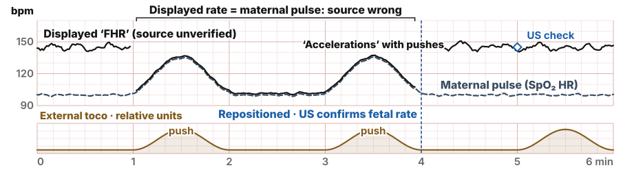
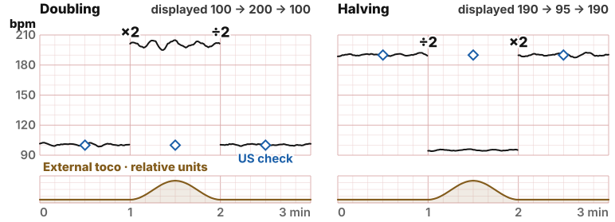
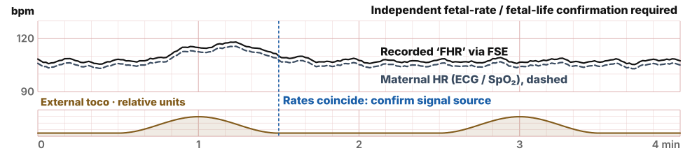
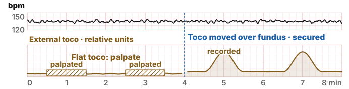
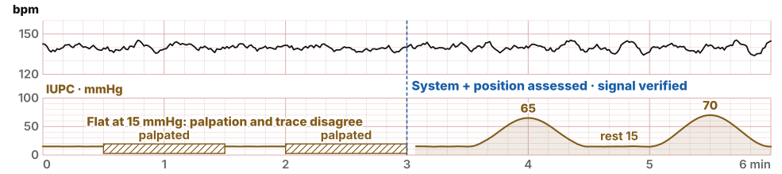
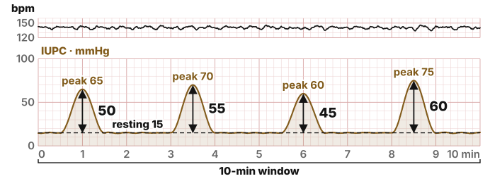

| Assess | External toco | Palpation |
|---|---|---|
| Frequency | Detects when acquisition is adequate | Palpate if missed / ambiguous |
| Duration | Approximate onset → end | Time onset → end |
| Intensity | Height is relative: not strength, not mmHg | Mild / moderate / strong |
| Resting tone | Baseline is relative: not resting pressure | Soft / firm between contractions |

| Flat, contractions felt | UA input / mode, cable, zero control back to monitor, displacement, failure |
| Damped / small | Placement; fluid-filled: kinks, air, level. Unreliable → replace |
| High / negative, no fluid return | Possible extra-ovular catheter — still gives readings. Do not advance or infuse to “prove” it |
| Resting pressure rising | Palpate + check FHR first; position, migration, retained fluid. Never zero away sustained tone |
| Spikes: cough / push | Annotate; not extra contractions, not amplitude |
